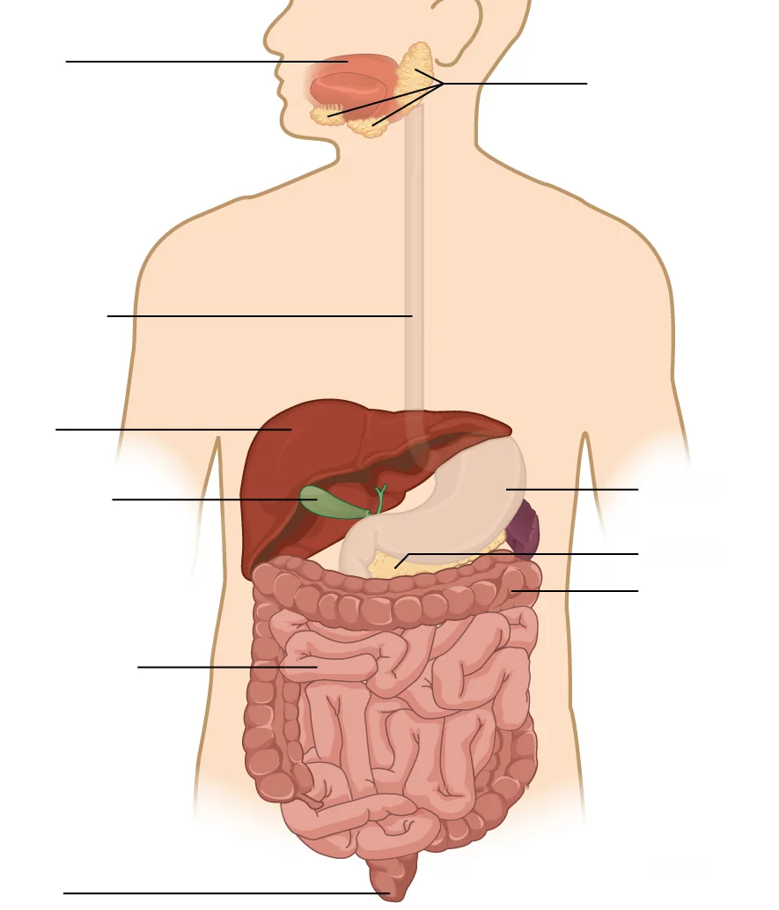
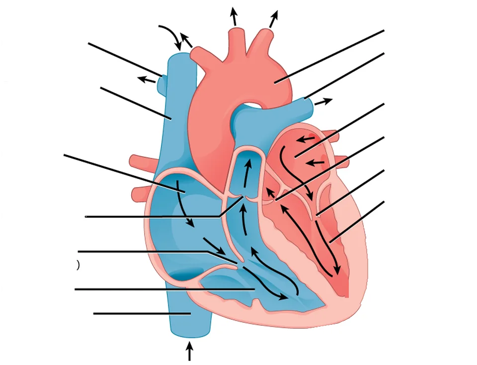
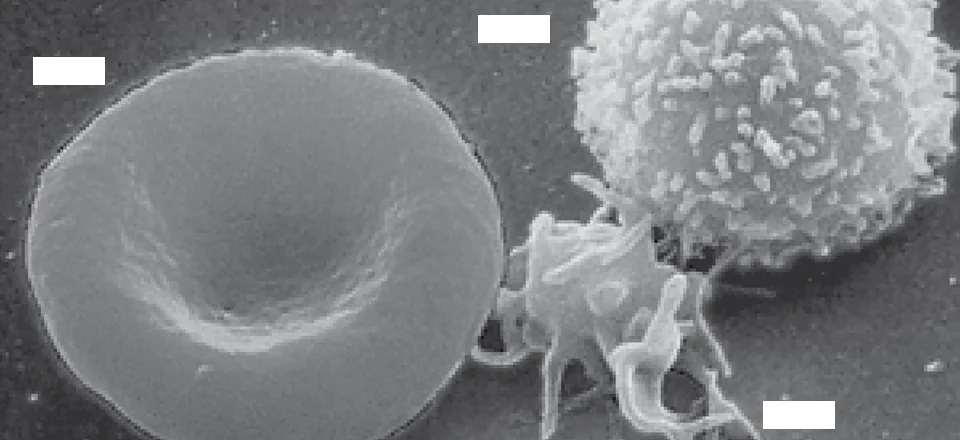
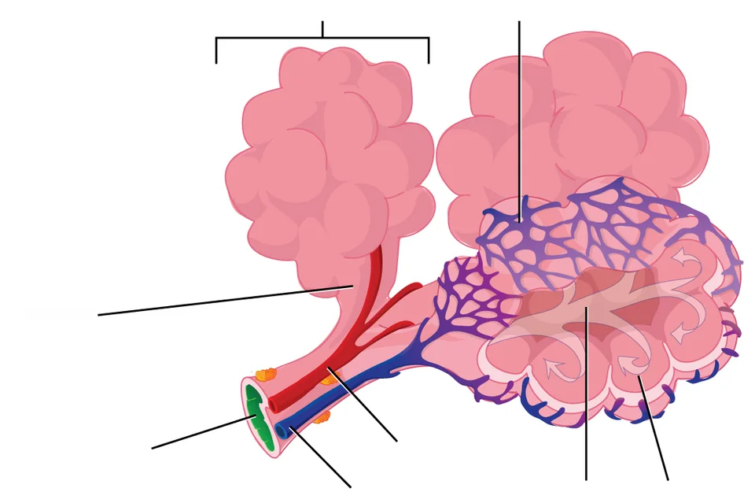
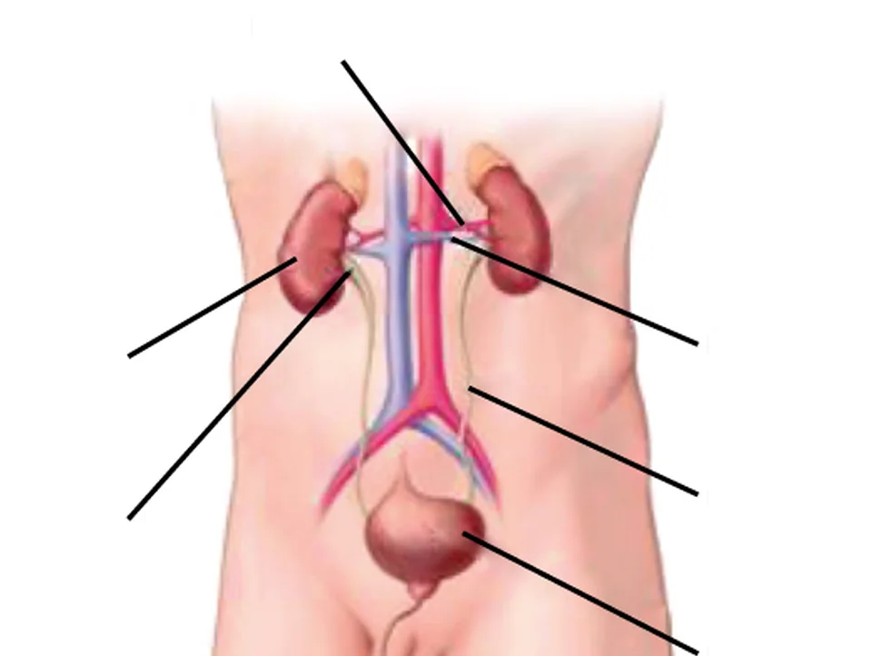

중학교 과학 · 2학년
중2-6동물과 에너지
한 끼 식사가 세포의 에너지가 되기까지
먼저 배운 내용
학습 목표
- 음식물 속 영양소를 검출하는 방법을 알고, 소화 기관과 소화 효소(아밀레이스, 펩신, 트립신, 라이페이스)의 작용으로 소화 과정을 설명할 수 있다.
- 심장과 혈관, 혈액의 구조와 기능을 알고, 온몸 순환과 폐순환의 경로를 순서대로 말할 수 있다.
- 호흡 기관의 구조를 알고, 갈비뼈와 가로막의 움직임으로 숨을 들이쉬고 내쉬는 원리를 모형으로 나타낼 수 있다.
- 노폐물이 생기는 과정과 콩팥에서 오줌이 만들어지는 과정(여과, 재흡수, 분비)을 모식도로 나타낼 수 있다.
- 세포호흡으로 에너지를 얻기 위해 소화계·순환계·호흡계·배설계가 어떻게 함께 일하는지 통합적으로 설명할 수 있다.
이 단원의 학습 사다리
| 단계 | 무엇을 하나? |
|---|---|
| STEP 1. 이전 학습 다시 보기 | 초등학교 '우리 몸의 구조와 기능', 중1 「생물의 구성과 다양성」, 중2 「식물과 에너지」를 다시 꺼낸다 |
| STEP 2. 기초 다지기 | 영양소, 효소, 확산, 기관계라는 디딤돌을 놓는다 |
| STEP 3. 핵심 개념 | 소화 → 순환 → 호흡 → 배설 → 세포호흡으로 모아 보기 |
| STEP 4. 오개념 바로잡기 | "폐가 스스로 부풀어 숨을 쉰다?" 같은 착각을 바로잡는다 |
| STEP 5. 다음 단계로 | 통합과학의 물질대사, 생명과학의 기관계 통합, 세포호흡의 단계 |
| STEP 6. 생활·산업·진로 | 소화제와 효소 산업, 인공 신장(혈액 투석), 심폐 소생술 |
단원 들어가기
점심으로 김밥 한 줄을 먹었다고 하자. 김밥 속 밥(녹말), 달걀(단백질), 참기름(지방)은 몇 시간 뒤 어디에 가 있을까? 그리고 그 음식이 정말 "힘"이 되려면 무엇이 더 필요할까?
달리기를 하면 숨이 가빠지고, 심장이 빨리 뛰고, 땀이 나고, 나중에는 배가 고파진다. 이 네 가지 현상은 따로따로 일어나는 것처럼 보이지만 사실은 한 가지 목적을 위한 것이다. 바로 우리 몸을 이루는 약 수십조 개의 세포 하나하나가 에너지를 얻는 것이다.
이 단원에서는 음식이 잘게 쪼개지는 소화, 산소와 영양소를 나르는 순환, 산소를 얻고 이산화 탄소를 내보내는 호흡, 남은 찌꺼기를 버리는 배설을 차례로 살펴보고, 마지막에 이 넷이 세포호흡이라는 하나의 목표로 이어지는 모습을 그려 본다.
STEP 1이전 학습 다시 보기
연계 개념표
| 이전 단원·성취기준 | 그때 배운 것 | 이 단원에서 확장되는 것 |
|---|---|---|
| 초등 5~6학년 '우리 몸의 구조와 기능' | 뼈와 근육, 소화·순환·호흡·배설 기관의 이름과 하는 일 | 각 기관이 어떻게 일하는지를 효소, 압력, 확산, 여과로 설명한다 |
| 초등 3~4학년 '동물의 생활' | 동물은 먹이를 먹어 살아가고, 사는 곳에 따라 생김새가 다르다 | 먹이가 에너지로 바뀌는 과정을 세포 수준까지 따라간다 |
| 중1 「생물의 구성과 다양성」 [9과02-01], [9과02-02] | 세포 → 조직 → 기관 → 기관계 → 개체, 미토콘드리아의 역할 | 소화계·순환계·호흡계·배설계가 함께 일하는 모습을 본다 |
| 중1 「기체의 성질」 [9과06-02] | 온도가 일정할 때 기체의 부피가 커지면 압력이 작아진다 | 가슴 속 부피가 커지면 폐 속 압력이 낮아져 공기가 들어온다 |
| 중2 「식물과 에너지」 [9과12-02] | 식물도 호흡하며, 호흡으로 양분을 분해해 에너지를 얻는다 | 동물의 세포호흡에 필요한 양분과 산소가 어떻게 세포까지 오는지 본다 |
준비 운동 (사전 진단)
Q1. 우리 몸의 구성 단계를 작은 것부터 순서대로 쓰시오. (세포, 기관, 조직, 개체, 기관계)
Q2. 다음 중 소화 기관이 아닌 것은? ① 위 ② 소장 ③ 콩팥 ④ 간
Q3. 식물의 호흡과 광합성 중, 낮과 밤 모두 일어나는 것은 무엇인가?
Q4. 주사기 입구를 막고 피스톤을 당기면 주사기 속 공기의 압력은 어떻게 될까?
정답 및 해설
Q1. 세포 → 조직 → 기관 → 기관계 → 개체. 동물에는 '기관계' 단계가 있다는 것이 식물과 다른 점이다.
Q2. ③ 콩팥은 오줌을 만드는 배설 기관이다. 간은 음식물이 직접 지나가지는 않지만 쓸개즙을 만드는 소화 기관이다.
Q3. 호흡 — 광합성은 빛이 있을 때만 일어나지만, 호흡은 살아 있는 모든 세포에서 밤낮없이 일어난다. 동물도 마찬가지이다.
Q4. 부피가 커지므로 압력이 작아진다. 이 원리가 STEP 3의 '숨 쉬는 원리'에 그대로 쓰인다.
STEP 2기초 다지기
① 영양소: 몸을 움직이는 연료와 몸을 만드는 재료
영양소(nutrient) 는 음식물에 들어 있으면서 우리 몸에 필요한 물질이다.
| 구분 | 영양소 | 주요 역할 | 많이 든 음식 |
|---|---|---|---|
| 에너지원 | 탄수화물(carbohydrate) | 주된 에너지원 (1 g당 약 4 kcal) | 밥, 빵, 감자, 고구마 |
| 에너지원 | 단백질(protein) | 몸을 구성하는 주성분, 에너지원 (1 g당 약 4 kcal) | 고기, 생선, 달걀, 콩 |
| 에너지원 | 지방(fat) | 에너지 저장, 세포막 성분 (1 g당 약 9 kcal) | 버터, 식용유, 견과류 |
| 에너지원 아님 | 바이타민 | 적은 양으로 몸의 기능 조절 | 채소, 과일 |
| 에너지원 아님 | 무기염류 | 뼈·이·혈액 성분, 몸의 기능 조절 | 우유(칼슘), 시금치(철), 미역 |
| 에너지원 아님 | 물 | 몸의 약 60~70 %, 물질 운반, 체온 조절 | 모든 음식, 마시는 물 |
예를 들어 탄수화물 30 g, 단백질 5 g, 지방 10 g이 든 과자에서는 약 의 에너지를 얻을 수 있다. 지방은 양이 적어도 에너지가 많다.
② 영양소를 찾아내는 검출 반응
눈으로는 음식 속 영양소가 보이지 않는다. 그래서 특정 영양소와 만나면 색이 변하는 용액을 이용한다.
| 검출할 영양소 | 사용하는 용액 | 색깔 변화 | 주의할 점 |
|---|---|---|---|
| 녹말 | 아이오딘-아이오딘화 칼륨 용액 | 청람색 | 가열하지 않는다 |
| 포도당(엿당 등 당) | 베네딕트 용액 | 가열하면 황적색 | 반드시 가열한다 |
| 단백질 | 5 % 수산화 나트륨 수용액 + 1 % 황산 구리(Ⅱ) 수용액 (뷰렛 반응) | 보라색 | 수산화 나트륨은 피부에 닿지 않게 |
| 지방 | 수단 Ⅲ 용액 | 선홍색 | — |
③ 효소: 반응을 빠르게 돕는 '분자 가위'
녹말이나 단백질은 아주 큰 분자이므로 그대로는 세포막을 통과하지 못한다. 몸은 이것을 작게 잘라야 하는데, 이때 쓰는 도구가 소화 효소(digestive enzyme) 이다.
- 효소는 몸에서 만들어지는 단백질로, 화학 반응을 빠르게 일어나게 돕는다.
- 효소는 정해진 물질에만 작용한다. (녹말을 자르는 효소는 단백질을 자르지 못한다.)
- 효소는 체온(약 37 ℃) 근처에서 가장 잘 작용한다. 너무 뜨거우면 효소가 망가진다.
④ 확산: 많은 곳에서 적은 곳으로
중1 「물질의 상태 변화」에서 향수 냄새가 퍼지는 확산(diffusion) 을 배웠다. 입자는 농도가 높은 곳에서 낮은 곳으로 저절로 퍼져 나간다. 우리 몸에서 산소와 이산화 탄소, 영양소가 세포로 드나드는 일의 많은 부분이 확산으로 일어난다. 이 단원의 폐포와 모세혈관에서 이 원리가 계속 등장한다.
⑤ 기관계: 한 팀으로 일하는 기관들
중1 「생물의 구성과 다양성」에서 배운 기관계(organ system) 는 같은 목적을 위해 함께 일하는 기관의 모임이다. 이 단원에서는 소화계(입, 위, 소장, 대장, 간, 쓸개, 이자), 순환계(심장, 혈관, 혈액), 호흡계(코, 기관, 기관지, 폐), 배설계(콩팥, 오줌관, 방광, 요도)를 차례로 살펴본다.
STEP 3핵심 개념
① 소화계 — 음식물을 작게 쪼개어 흡수하기
소화(digestion) 는 크기가 큰 영양소를 몸속으로 흡수할 수 있을 만큼 작게 분해하는 과정이다. 음식물은 입 → 식도 → 위 → 소장 → 대장 → 항문으로 이어지는 긴 관(소화관)을 지나며, 간·쓸개·이자는 소화액을 만들거나 저장해 보내 준다. 실제 몸속에서 소화 기관이 놓인 모습은 아래 그림과 같다.

| 소화 기관 | 소화액(분비하는 곳) | 대표 효소·물질 | 하는 일 |
|---|---|---|---|
| 입 | 침(침샘) | 아밀레이스(amylase) | 녹말 → 엿당 |
| 위 | 위액(위샘) | 펩신(pepsin), 염산 | 단백질 → 더 작은 단백질 조각. 염산은 펩신을 돕고 세균을 죽인다 |
| 간·쓸개 | 쓸개즙(간에서 만들어 쓸개에 저장) | 소화 효소 없음 | 지방 덩어리를 작은 알갱이로 만들어 지방 소화를 돕는다 |
| 이자 → 소장 | 이자액(이자) | 아밀레이스, 트립신(trypsin), 라이페이스(lipase) | 녹말 → 엿당, 단백질 → 더 작은 조각, 지방 → 지방산과 모노글리세리드 |
| 소장 | 소장 벽의 소화 효소 | 탄수화물·단백질 소화 효소 | 엿당 → 포도당, 단백질 조각 → 아미노산 |
| 대장 | 소화액 없음 | — | 물을 흡수하고 찌꺼기를 대변으로 만든다 |
세 가지 에너지 영양소의 소화를 한 줄로 정리하면 다음과 같다.
흡수: 융털이 넓은 표면을 만든다
소장 안쪽 벽에는 주름이 많고, 주름 표면에는 손가락처럼 생긴 융털(villus) 이 빽빽하게 나 있다. 주름과 융털 덕분에 영양소와 닿는 표면적이 매우 넓어져 흡수가 효율적으로 일어난다.
| 영양소 | 흡수되는 곳 | 이동 경로 |
|---|---|---|
| 포도당, 아미노산, 무기염류 (물에 잘 녹는 것) | 융털의 모세혈관 | 모세혈관 → 간 → 심장 → 온몸 |
| 지방산, 모노글리세리드 (물에 잘 녹지 않는 것) | 융털의 암죽관 | 암죽관 → 림프관 → 심장 근처 혈관 → 온몸 |
예제 1 — 침의 소화 작용 결과 해석하기
그림과 같이 시험관 A에는 녹말 용액 + 물, 시험관 B에는 녹말 용액 + 침 용액을 넣고 37 ℃ 물에 10분 동안 두었다. 두 시험관에 각각 아이오딘-아이오딘화 칼륨 용액과 베네딕트 용액(가열)을 넣었더니 다음과 같았다.
| 시험관 | 아이오딘 반응 | 베네딕트 반응 |
|---|---|---|
| A (녹말 + 물) | 청람색 | 변화 없음 |
| B (녹말 + 침) | 변화 없음(또는 연하게) | 황적색 |
(1) B에서 녹말은 어떻게 되었는가? (2) A를 넣은 까닭은?
풀이 (1) B에서는 청람색이 나타나지 않으므로 녹말이 거의 없고, 황적색이 나타나므로 당(엿당)이 생겼다. 침 속 아밀레이스가 녹말을 엿당으로 분해하였다. (2) A는 침을 넣지 않은 대조군이다. 물만으로는 녹말이 분해되지 않음을 보여 주어, B의 변화가 침 때문임을 확인해 준다.
바로 확인방금 읽은 내용, 바로 점검하기
- (O/X) 쓸개즙에는 지방을 분해하는 소화 효소가 들어 있다.
- 빈칸: 입에서 침 속의 ( )가 녹말을 엿당으로 분해한다.
- 짝짓기: (가) 펩신, (나) 라이페이스가 분해하는 영양소를 고르시오. ㄱ. 지방 ㄴ. 단백질
- 지방산과 모노글리세리드는 융털의 모세혈관과 암죽관 중 어디로 흡수되는가?
정답
- X — 쓸개즙에는 소화 효소가 없다. 지방을 작은 알갱이로 만들어 라이페이스를 돕는다.
- 아밀레이스
- (가) ㄴ, (나) ㄱ — 펩신은 위에서 단백질을, 라이페이스는 지방을 분해한다.
- 암죽관 — 물에 잘 녹지 않는 영양소는 암죽관으로, 포도당·아미노산은 모세혈관으로 흡수된다.
② 순환계 — 몸속 택배망
몸속 세포는 영양소와 산소를 받고 노폐물을 내보내야 한다. 이 '배달'을 맡는 것이 순환계(circulatory system) 이며, 심장·혈관·혈액으로 이루어진다.
심장: 쉬지 않는 펌프
심장(heart) 은 주먹만 한 근육 덩어리로, 2개의 심방(atrium) 과 2개의 심실(ventricle) 로 나뉜다.
| 심장의 방 | 연결된 혈관 | 하는 일 |
|---|---|---|
| 우심방 | 대정맥 | 온몸을 돌고 온 혈액을 받는다 |
| 우심실 | 폐동맥 | 혈액을 폐로 내보낸다 |
| 좌심방 | 폐정맥 | 폐를 거쳐 온 혈액을 받는다 |
| 좌심실 | 대동맥 | 혈액을 온몸으로 내보낸다. 벽이 가장 두껍다 |
- 심방은 혈액을 받는 곳, 심실은 혈액을 내보내는 곳이다.
- 심방과 심실 사이, 심실과 동맥 사이에는 판막(valve) 이 있어 혈액이 거꾸로 흐르지 않게 한다.
- 좌심실의 벽이 가장 두꺼운 이유는 혈액을 온몸 끝까지 보내야 해서 가장 강한 힘이 필요하기 때문이다.
실제 심장을 세로로 잘라 보면 아래 그림과 같다. 그 아래의 모식도는 네 방과 혈관의 연결을 단순하게 나타낸 것이다.

혈관: 동맥, 모세혈관, 정맥
| 구분 | 동맥 | 모세혈관 | 정맥 |
|---|---|---|---|
| 혈액이 흐르는 방향 | 심장 → 온몸 | 동맥과 정맥을 연결 | 온몸 → 심장 |
| 혈관 벽 | 두껍고 탄력이 크다 | 한 겹의 세포층으로 매우 얇다 | 동맥보다 얇다 |
| 혈압 | 가장 높다 | 중간 | 가장 낮다 |
| 혈액이 흐르는 속도 | 가장 빠르다 | 가장 느리다 | 중간 |
| 특징 | 손목에서 맥박을 느낄 수 있다 | 온몸에 그물처럼 퍼져 세포와 물질 교환 | 혈액이 거꾸로 흐르지 않게 판막이 있다 |
모세혈관에서 혈액이 느리게 흐르는 것은 약점이 아니라 장점이다. 천천히 지나가는 동안 세포와 산소·영양소·노폐물을 충분히 주고받을 수 있기 때문이다.
혈액: 액체 성분과 세포 성분
| 성분 | 모양·특징 | 하는 일 |
|---|---|---|
| 혈장 | 노란색 액체, 대부분 물 | 영양소, 이산화 탄소, 노폐물 등을 녹여 운반 |
| 적혈구(red blood cell) | 가운데가 오목한 원반 모양, 핵이 없다 | 헤모글로빈으로 산소 운반 |
| 백혈구 | 핵이 있고 모양이 일정하지 않다 | 몸에 들어온 세균을 잡아먹는 식균 작용 |
| 혈소판 | 작고 모양이 일정하지 않다 | 상처가 나면 혈액을 굳게 하여 피를 멈춘다 |
전자 현미경으로 보면 혈구 세 가지의 생김새 차이가 뚜렷하다.

온몸 순환과 폐순환
혈액은 심장에서 출발해 두 갈래 길을 돌아 다시 심장으로 돌아온다.
| 구분 | 경로 | 하는 일 |
|---|---|---|
| 온몸 순환(체순환) | 좌심실 → 대동맥 → 온몸의 모세혈관 → 대정맥 → 우심방 | 온몸의 세포에 산소와 영양소를 주고, 이산화 탄소와 노폐물을 받아 온다 |
| 폐순환 | 우심실 → 폐동맥 → 폐의 모세혈관 → 폐정맥 → 좌심방 | 폐에서 이산화 탄소를 내보내고 산소를 받아 온다 |
산소가 많은 혈액을 동맥혈, 산소가 적은 혈액을 정맥혈이라 한다. 폐동맥에는 정맥혈이, 폐정맥에는 동맥혈이 흐른다. 이름과 혈액이 엇갈리는 유일한 곳이므로 주의하자.
예제 2 — 1분 동안 심장이 내보내는 혈액
어떤 학생의 심장은 1분에 70번 뛰고, 한 번 뛸 때마다 좌심실에서 약 70 mL의 혈액을 내보낸다. 1분 동안 좌심실이 내보내는 혈액은 약 몇 L인가?
풀이
어른 몸속 혈액이 약 5 L이므로, 몸속 혈액이 약 1분에 한 바퀴 도는 셈이다. 운동을 하면 심장이 더 자주, 더 세게 뛰어 이 양이 몇 배로 늘어난다.
바로 확인방금 읽은 내용, 바로 점검하기
- (O/X) 폐정맥에는 산소가 많은 혈액(동맥혈)이 흐른다.
- 빈칸: 심장의 네 방 가운데 벽이 가장 두꺼운 곳은 ( )이다.
- 동맥, 모세혈관, 정맥 중 혈액이 가장 느리게 흐르는 혈관은?
- 혈액 성분 중 산소를 운반하는 것은? ① 혈장 ② 적혈구 ③ 백혈구 ④ 혈소판
정답
- O — 폐에서 산소를 받은 혈액이 폐정맥을 따라 좌심방으로 간다. 혈관 이름은 흐르는 방향으로 붙인다.
- 좌심실 — 혈액을 온몸 끝까지 보내야 하므로 가장 강한 힘이 필요하다.
- 모세혈관 — 천천히 흐르는 동안 세포와 물질을 충분히 주고받는다.
- ② — 적혈구의 헤모글로빈이 산소를 운반한다.
③ 호흡계 — 산소를 들이고 이산화 탄소를 내보내기
호흡 기관의 구조
공기는 코 → 기관 → 기관지 → 폐 순서로 들어간다.
| 기관 | 구조와 기능 |
|---|---|
| 코 | 콧속의 털과 끈끈한 액체가 먼지를 거르고, 공기를 따뜻하고 축축하게 한다 |
| 기관, 기관지 | 안쪽 벽의 섬모가 먼지와 세균을 밖으로 밀어낸다(가래) |
| 폐 | 수많은 폐포(alveolus) 로 이루어진다. 폐포는 모세혈관으로 둘러싸여 있다 |
| 갈비뼈, 가로막 | 폐를 둘러싼 가슴 공간(흉강)의 크기를 바꾸어 숨을 쉬게 한다 |
폐포는 아주 작은 공기 주머니가 포도송이처럼 모여 있는 구조이다. 소장의 융털처럼, 폐포도 표면적을 넓혀 기체 교환을 효율적으로 한다. 폐포 하나하나는 아래 그림처럼 모세혈관에 촘촘히 둘러싸여 있다.

호흡 운동: 폐는 스스로 움직이지 못한다
폐에는 근육이 없다. 폐가 부풀고 줄어드는 것은 갈비뼈와 가로막이 흉강의 부피를 바꾸기 때문이다. 이것을 호흡 운동(breathing movement) 이라 한다.
| 구분 | 갈비뼈 | 가로막 | 흉강 부피 | 폐 속 압력 | 공기 이동 |
|---|---|---|---|---|---|
| 들숨 | 위로 올라간다 | 아래로 내려간다 | 커진다 | 대기압보다 낮아진다 | 밖 → 폐 |
| 날숨 | 아래로 내려간다 | 위로 올라간다 | 작아진다 | 대기압보다 높아진다 | 폐 → 밖 |
중1 「기체의 성질」에서 배운 대로, 기체의 부피가 커지면 압력이 작아진다. 들숨 때 흉강과 폐가 커지면 폐 속 압력이 바깥 공기보다 낮아지고, 공기는 압력이 높은 바깥에서 낮은 폐 속으로 밀려 들어온다.
호흡 운동 모형
| 모형의 부분 | 우리 몸의 부분 |
|---|---|
| 페트병(또는 유리종) | 흉강(갈비뼈로 둘러싸인 가슴 공간) |
| Y자 관 | 기관과 기관지 |
| 고무풍선 | 폐 |
| 페트병 아래의 고무 막 | 가로막 |
고무 막을 아래로 당기면 병 속 부피가 커지고 압력이 낮아져 풍선이 부푼다(들숨). 고무 막을 놓거나 위로 밀면 풍선이 쪼그라든다(날숨). 이 모형은 가로막의 움직임은 잘 보여 주지만, 갈비뼈가 움직이는 것은 나타내지 못한다는 한계가 있다.
기체 교환: 확산으로 주고받는다
| 장소 | 산소의 이동 | 이산화 탄소의 이동 | 까닭 |
|---|---|---|---|
| 폐포 ↔ 모세혈관 | 폐포 → 모세혈관 | 모세혈관 → 폐포 | 폐포에는 산소가 많고 이산화 탄소가 적다 |
| 모세혈관 ↔ 조직세포 | 모세혈관 → 조직세포 | 조직세포 → 모세혈관 | 세포는 산소를 계속 쓰고 이산화 탄소를 계속 만든다 |
기체는 모두 농도가 높은 곳에서 낮은 곳으로 확산한다. 별도의 '밀어내는 힘' 없이도 저절로 일어나는 일이다. 들숨과 날숨을 석회수에 불어 넣어 비교하면 날숨 쪽 석회수가 더 뿌옇게 흐려지는데, 이는 날숨에 이산화 탄소가 더 많기 때문이다.
바로 확인방금 읽은 내용, 바로 점검하기
- (O/X) 폐에는 근육이 있어서 스스로 부풀었다 줄어든다.
- 빈칸: 공기는 코 → ( ) → 기관지 → 폐 순서로 들어간다.
- 날숨 때 가로막은 (위로 / 아래로) 움직이고, 폐 속 압력은 대기압보다 (높아 / 낮아)진다.
- 폐포와 모세혈관 사이에서 폐포 → 모세혈관으로 이동하는 기체는 무엇인가?
정답
- X — 폐에는 근육이 없다. 갈비뼈와 가로막이 흉강의 부피를 바꾼다.
- 기관
- 위로, 높아 — 흉강이 작아져 폐 속 압력이 높아지므로 공기가 밖으로 나간다.
- 산소 — 폐포 쪽 산소 농도가 더 높아서 모세혈관 쪽으로 확산한다.
④ 배설계 — 혈액 속 노폐물을 걸러 내기
노폐물은 어디에서 생기는가?
세포가 영양소를 분해해 에너지를 얻으면 쓰고 남은 물질, 즉 노폐물(waste) 이 생긴다.
| 분해되는 영양소 | 생기는 노폐물 | 내보내는 방법 |
|---|---|---|
| 탄수화물, 지방 | 이산화 탄소, 물 | 이산화 탄소 → 폐(날숨). 물 → 폐(날숨의 수증기), 콩팥(오줌), 피부(땀) |
| 단백질 | 이산화 탄소, 물, 암모니아 | 암모니아는 독성이 강해 간에서 독성이 약한 요소로 바뀐 뒤 → 콩팥(오줌) |
세 가지 에너지 영양소 가운데 단백질에만 질소가 들어 있어서 암모니아가 생긴다. 탄수화물과 지방은 탄소·수소·산소로만 이루어져 있으므로 이산화 탄소와 물만 생긴다.
배설 기관의 구조
| 기관 | 하는 일 |
|---|---|
| 콩팥(kidney) | 강낭콩 모양으로 허리 뒤쪽 좌우에 1개씩 있다. 혈액을 걸러 오줌을 만든다 |
| 오줌관 | 콩팥에서 만든 오줌을 방광으로 보낸다 |
| 방광 | 오줌을 모아 두었다가 내보낸다 |
| 요도 | 오줌이 몸 밖으로 나가는 통로 |
몸속에서 이 기관들이 놓인 실제 위치는 아래 그림과 같다.

콩팥에는 오줌을 만드는 기본 단위인 네프론(nephron) 이 아주 많이 있다. 네프론은 모세혈관이 실뭉치처럼 뭉친 사구체, 사구체를 감싼 보먼주머니, 보먼주머니에 이어진 가늘고 긴 세뇨관으로 이루어진다.
오줌이 만들어지는 세 단계
| 단계 | 일어나는 곳 | 이동 방향 | 이동하는 물질 |
|---|---|---|---|
| 여과 | 사구체 → 보먼주머니 | 혈액 → 네프론 | 크기가 작은 물질: 물, 포도당, 아미노산, 무기염류, 요소 (혈구와 단백질은 너무 커서 여과되지 않는다) |
| 재흡수 | 세뇨관 → 모세혈관 | 네프론 → 혈액 | 몸에 필요한 물질: 포도당과 아미노산은 전부, 물과 무기염류는 대부분 |
| 분비 | 모세혈관 → 세뇨관 | 혈액 → 네프론 | 미처 여과되지 않고 남은 노폐물 일부 |
오줌이 몸 밖으로 나가는 길을 모식도처럼 글로 나타내면 다음과 같다.
어른의 콩팥에서 하루에 여과되는 원뇨는 약 180 L이지만 실제 오줌은 약 1.5~2 L에 불과하다. 여과된 물의 약 99 % 가 다시 혈액으로 돌아가는 셈이다.
예제 3 — 혈장, 원뇨, 오줌 비교하기
다음 표는 건강한 사람의 혈장, 원뇨(보먼주머니 속 액체), 오줌에 들어 있는 물질 AC의 농도를 비교한 것이다. AC는 단백질, 포도당, 요소 중 하나이다.
| 물질 | 혈장 | 원뇨 | 오줌 |
|---|---|---|---|
| A | 있음 | 없음 | 없음 |
| B | 있음 | 있음 | 없음 |
| C | 있음 | 있음 | 매우 진함 |
풀이
- A: 원뇨에 없으므로 여과되지 않는 물질 → 단백질
- B: 여과되지만 오줌에 없으므로 전부 재흡수되는 물질 → 포도당
- C: 여과된 뒤 물이 대부분 재흡수되어 오줌에서 진해지는 노폐물 → 요소
바로 확인방금 읽은 내용, 바로 점검하기
- 빈칸: 단백질이 분해될 때 생긴 암모니아는 ( )에서 독성이 약한 요소로 바뀐다.
- (O/X) 건강한 사람의 원뇨에는 포도당이 들어 있다.
- 오줌이 나가는 길: 콩팥 → ( ) → 방광 → ( ) → 몸 밖
- 사구체에서 보먼주머니로 여과되지 않는 것을 두 가지 쓰시오.
정답
- 간
- O — 포도당은 여과되어 원뇨에 들어가지만, 세뇨관에서 전부 재흡수되어 오줌에는 없다.
- 오줌관, 요도
- 혈구, 단백질 — 크기가 커서 여과되지 않는다.
⑤ 세포호흡 — 네 기관계가 모이는 곳
세포호흡이란?
세포호흡(cellular respiration) 은 세포 속 미토콘드리아에서 영양소(주로 포도당)를 산소로 분해하여 생명 활동에 필요한 에너지를 얻는 과정이다.
중2 「식물과 에너지」에서 배운 식물의 호흡과 같은 반응이다. 식물은 광합성으로 포도당을 스스로 만들고, 동물은 음식물을 먹어 얻는다는 점만 다르다.
세포호흡으로 얻은 에너지는 근육 운동(걷기, 심장 박동, 호흡 운동), 체온 유지(추운 날 몸이 떨리며 열을 낸다), 생장(키가 크고 상처가 아무는 것), 뇌의 활동과 물질의 이동(콩팥의 재흡수 등)에 쓰인다.
네 기관계는 한 팀이다
세포호흡에는 영양소와 산소가 필요하고, 그 결과 이산화 탄소와 물, 질소 노폐물이 생긴다. 이 재료를 대 주고 결과물을 치우는 것이 바로 네 기관계이다.
| 기관계 | 세포호흡을 위해 하는 일 | 이 기관계가 멈추면? |
|---|---|---|
| 소화계 | 세포호흡의 원료인 영양소를 흡수할 수 있게 만든다 | 원료가 들어오지 않아 몸에 저장된 영양소를 꺼내 쓰다가 결국 바닥난다 |
| 호흡계 | 세포호흡에 필요한 산소를 얻고, 생긴 이산화 탄소를 내보낸다 | 몇 분 만에 세포가 에너지를 얻지 못한다 |
| 순환계 | 영양소·산소를 세포로, 노폐물을 폐·콩팥으로 운반한다 | 재료가 있어도 세포에 닿지 못한다 |
| 배설계 | 질소 노폐물(요소)과 남는 물을 내보내 몸속 환경을 일정하게 유지한다 | 노폐물이 쌓여 세포가 제대로 일하지 못한다 |
예제 4 — 운동할 때 몸의 변화를 통합적으로 설명하기
100 m 달리기를 하고 나면 숨이 가쁘고 심장이 빨리 뛴다. 그 까닭을 세포호흡과 기관계를 연결해 설명해 보자.
풀이
- 다리 근육 세포가 많은 에너지를 쓰므로 세포호흡이 활발해진다.
- 세포호흡에는 산소가 더 많이 필요하고, 이산화 탄소가 더 많이 생긴다.
- 호흡계: 호흡 운동이 빨라지고 깊어져 더 많은 산소를 얻고, 더 많은 이산화 탄소를 내보낸다.
- 순환계: 심장 박동이 빨라져 산소와 영양소를 근육으로 더 빨리 운반하고, 이산화 탄소를 폐로 더 빨리 가져간다.
- 세포호흡에서 나온 에너지 일부는 열이 되므로 체온이 올라가고, 땀을 흘려 열을 내보낸다.
즉, 숨이 가쁜 것과 심장이 빨리 뛰는 것은 세포에 산소를 더 많이 보내기 위한 한 팀의 협력이다.
바로 확인방금 읽은 내용, 바로 점검하기
- 빈칸: 세포호흡은 세포 속 ( )에서 일어난다.
- 빈칸: 포도당 + ( ) → 이산화 탄소 + 물 + 에너지
- 세포호흡에 필요한 산소를 얻는 기관계와, 요소를 몸 밖으로 내보내는 기관계를 차례로 쓰시오.
- (O/X) 숨을 들이쉬고 내쉬는 호흡 운동과 세포호흡은 같은 것이다.
정답
- 미토콘드리아
- 산소
- 호흡계, 배설계
- X — 호흡 운동은 공기를 드나들게 하는 것이고, 세포호흡은 세포 속에서 에너지를 얻는 화학 반응이다.
STEP 4오개념 바로잡기
| 흔한 오개념 | 올바른 개념 | 왜 그럴까? |
|---|---|---|
| 소화는 위에서 대부분 일어난다 | 최종 소화와 흡수는 대부분 소장에서 일어난다 | 위에서는 단백질 소화가 시작될 뿐이고, 녹말·지방·단백질이 가장 작은 단위가 되는 곳은 소장이다 |
| 쓸개즙에는 지방을 분해하는 효소가 들어 있다 | 쓸개즙에는 소화 효소가 없다. 지방을 작은 알갱이로 만들어 라이페이스를 돕는다 | 지방을 실제로 분해하는 효소는 이자액의 라이페이스이다 |
| 동맥에는 항상 산소가 많은 피가, 정맥에는 산소가 적은 피가 흐른다 | 혈관 이름은 흐르는 방향(심장에서 나가면 동맥)으로 정한다 | 폐동맥에는 정맥혈, 폐정맥에는 동맥혈이 흐른다 |
| 폐가 스스로 부풀었다 줄었다 하며 숨을 쉰다 | 폐에는 근육이 없다. 갈비뼈와 가로막이 흉강의 부피를 바꾼다 | 흉강 부피가 커지면 폐 속 압력이 낮아져 공기가 저절로 들어온다 |
| 숨을 쉬는 것과 세포호흡은 같은 것이다 | 호흡 운동은 공기를 드나들게 하는 것, 세포호흡은 세포 속에서 에너지를 얻는 화학 반응이다 | 호흡 운동과 기체 교환은 세포호흡에 쓸 산소를 공급하는 앞 단계이다 |
| 대변을 내보내는 것도 배설이다 | 대변은 소화되지 않은 찌꺼기이므로 배설이 아니다 | 배설은 세포에서 생긴 노폐물을 내보내는 것이다 |
| 콩팥은 노폐물만 골라서 걸러 낸다 | 콩팥은 작은 물질을 일단 다 걸러 낸 뒤 필요한 것을 다시 흡수한다 | 그래서 원뇨에는 포도당이 있지만 건강한 사람의 오줌에는 없다 |
STEP 5다음 단계로 한 걸음 더
중3·고등학교와의 연결
| 학년·과목 | 단원 | 이어지는 내용 |
|---|---|---|
| 중3 | 「자극과 반응」 | 뇌·신경·호르몬이 호흡, 심장 박동, 혈당량, 체온을 조절하는 방법 |
| 통합과학1 | 「생명 시스템과 물질대사」 | 세포를 하나의 시스템으로 보고, 세포막을 통한 물질 출입과 효소가 물질대사를 빠르게 하는 원리 |
| 생명과학 | 「생명 시스템의 구성」 | 소화·순환·호흡·배설이 기관계의 통합적 작용으로 나타나는 과정, 대사성 질환 |
| 세포와 물질대사 | 「물질대사와 에너지」 | 효소의 종류, 특성, 활성에 영향을 주는 요인(온도, pH) |
| 세포와 물질대사 | 「세포호흡과 광합성」 | 미토콘드리아의 구조, 세포호흡의 단계, 산소 호흡과 발효 |
① 세포호흡의 에너지는 어디에 저장될까? — ATP
이 단원에서는 "세포호흡으로 에너지를 얻는다"고만 했다. 고등학교 생명과학에서는 이 에너지가 바로 쓰이는 것이 아니라, ATP(아데노신 삼인산) 라는 물질에 일단 저장된다는 것을 배운다. ATP는 세포 속 '충전된 건전지' 와 같아서, 근육이 움직이거나 물질을 만들 때 ATP를 분해하며 에너지를 꺼내 쓴다. 포도당 속 에너지의 일부만 ATP에 저장되고 나머지는 열로 나오는데, 이 열이 우리 체온을 유지하는 데 쓰인다.
② 세포호흡은 한 번에 일어나지 않는다
는 시작과 끝만 적은 식이다. 진로 선택 과목 '세포와 물질대사'에서는 이 반응이 세포질과 미토콘드리아에서 여러 단계(해당 과정, 피루브산 산화, TCA 회로, 전자 전달계) 로 나누어 일어나며, 단계마다 다른 효소가 작용한다는 것을 배운다. 산소가 부족하면 발효가 일어나 젖산이 생긴다. 격한 운동 중 근육이 빨리 지치는 현상이 이와 관련되어 있다고 설명하는데, 운동 다음 날 나타나는 근육통은 젖산 때문이 아니라 근육의 미세한 손상 때문이라고 본다.
③ 효소는 왜 온도와 pH에 민감할까?
효소는 단백질이며, 정해진 입체 구조를 가져야 일할 수 있다. 너무 높은 온도나 맞지 않는 pH에서는 구조가 망가져 기능을 잃는다. 그래서 위에서 일하는 펩신은 산성에서, 소장에서 일하는 트립신은 약한 염기성에서 가장 잘 작용한다. 고등학교에서는 이를 그래프(온도·pH에 따른 반응 속도)로 분석한다.
지금 vs 다음 단계
| 구분 | 중학교 2학년 (지금) | 고등학교 생명과학·세포와 물질대사 |
|---|---|---|
| 소화 | 대표 효소 4가지와 최종 산물 | 효소의 구조, 기질 특이성, 온도·pH와 효소 활성 그래프 |
| 순환 | 심장 구조, 온몸 순환과 폐순환 | 기관계 통합, 혈압 조절, 혈액의 응집과 면역 |
| 호흡 | 호흡 운동, 확산에 의한 기체 교환 | 세포호흡의 단계, 산소 호흡과 발효 비교 |
| 배설 | 여과·재흡수·분비, 요소 | 항상성 유지, 호르몬에 의한 물·무기염류 조절 |
| 에너지 | "세포호흡으로 에너지를 얻는다" | ATP의 생성과 이용, 에너지 전환 효율 |
STEP 6생활·산업·진로 연결
사례 1. 소화제와 효소 산업
- 원리 소화가 잘 안될 때 먹는 소화제 중에는 녹말·단백질·지방을 분해하는 소화 효소를 담은 것이 있다. 몸에서 부족한 '분자 가위'를 밖에서 보태 주는 것이다.
- 어디에 쓰이나 효소는 세탁 세제(단백질 얼룩·기름 얼룩 분해), 연육제(고기를 부드럽게), 식혜 만들기(엿기름 속 아밀레이스가 밥의 녹말을 당으로 분해) 등 생활 곳곳에 쓰인다.
사례 2. 인공 신장 — 혈액 투석
- 원리 콩팥이 제 기능을 못 하면 요소 같은 노폐물이 몸에 쌓인다. 혈액 투석기는 혈액을 몸 밖으로 꺼내 아주 작은 구멍이 있는 막을 사이에 두고 투석액과 만나게 한다. 요소처럼 작은 물질은 확산으로 투석액 쪽으로 빠져나가고, 혈구와 단백질처럼 큰 물질은 혈액에 남는다.
- 연결 콩팥의 여과와 폐포의 확산을 기계로 흉내 낸 장치이다. 다만 콩팥처럼 필요한 물질을 골라 다시 흡수하는 일은 정밀하게 하지 못하므로, 투석액의 성분을 조절해 보완한다.
사례 3. 심폐 소생술과 자동 심장 충격기
- 원리 심장이 멈추면 혈액 순환이 멈추고, 뇌세포는 산소를 받지 못해 몇 분 안에 손상되기 시작한다. 가슴 압박은 멈춘 심장을 대신해 손으로 혈액을 밀어 순환시키는 일이다.
- 어디에 쓰이나 학교, 지하철역 등 많은 사람이 모이는 곳에 자동 심장 충격기(AED) 를 두고, 심폐 소생술 교육을 실시한다. 순환계가 세포호흡과 생명에 얼마나 중요한지 보여 주는 사례이다.
관련 진로와 학과
| 진로 | 하는 일 | 관련 학과 |
|---|---|---|
| 의사·간호사 | 소화기·심장·호흡기·신장 질환의 진단과 치료 | 의학, 간호학 |
| 영양사 | 영양소 균형을 맞춘 식단 설계 | 식품영양학 |
| 의공학자 | 인공 신장, 인공 심장, 인공호흡기 같은 의료 기기 개발 | 의공학, 기계공학, 전자공학 |
| 효소·바이오 연구원 | 식품·세제·의약품에 쓰이는 효소 개발 | 생명공학, 생명과학, 식품공학 |
| 스포츠 과학자 | 운동 중 심폐 기능 측정, 훈련 프로그램 설계 | 체육학, 스포츠과학 |
탐구 활동
활동 A. 음식물에 들어 있는 영양소 검출하기
목표 검출 용액을 이용해 여러 음식물에 들어 있는 영양소를 찾는다.
준비물 밥(또는 감자) 즙, 달걀흰자 용액, 포도당 용액, 식용유, 우유, 시험관 여러 개, 스포이트, 아이오딘-아이오딘화 칼륨 용액, 베네딕트 용액, 5 % 수산화 나트륨 수용액, 1 % 황산 구리(Ⅱ) 수용액, 수단 Ⅲ 용액, 비커, 가열 장치, 시험관 집게, 보안경, 실험용 장갑
과정
- 각 음식물 시료를 시험관 4개에 같은 양씩 나누어 넣는다.
- 첫째 시험관에 아이오딘-아이오딘화 칼륨 용액을 2~3방울 넣고 색깔 변화를 관찰한다.
- 둘째 시험관에 베네딕트 용액을 넣고, 시험관을 뜨거운 물이 든 비커에 넣어 가열한 뒤 관찰한다.
- 셋째 시험관에 5 % 수산화 나트륨 수용액과 1 % 황산 구리(Ⅱ) 수용액을 차례로 넣고 관찰한다.
- 넷째 시험관에 수단 Ⅲ 용액을 넣고 흔든 뒤 관찰한다.
- 아무 시료도 넣지 않고 물만 넣은 시험관으로도 같은 실험을 하여 비교한다.
결과 기록
| 시료 | 아이오딘 반응 (녹말) | 베네딕트 반응 (당) | 뷰렛 반응 (단백질) | 수단 Ⅲ 반응 (지방) |
|---|---|---|---|---|
| 밥 즙 | ||||
| 달걀흰자 | ||||
| 포도당 용액 | ||||
| 식용유 | ||||
| 우유 | ||||
| 물 (대조군) |
생각해 보기
- 물만 넣은 시험관을 함께 실험한 까닭은 무엇일까?
- 우유에서 여러 가지 반응이 함께 나타났다면, 이것은 무엇을 뜻할까?
- 베네딕트 반응에서 가열하지 않으면 어떤 결과가 나올까?
활동 B. 침의 소화 작용 탐구하기
목표 침 속 소화 효소가 녹말을 분해하는지, 온도에 따라 작용이 달라지는지 확인한다.
준비물 1 % 녹말 용액, 침 용액(물로 입을 헹군 뒤 깨끗한 물을 입에 머금었다가 모은 것), 시험관 4개, 비커(얼음물, 약 37 ℃ 물, 끓는 물), 온도계, 아이오딘-아이오딘화 칼륨 용액, 베네딕트 용액, 가열 장치
과정
- 시험관 A~D를 준비한다. A: 녹말 + 물(37 ℃), B: 녹말 + 침(37 ℃), C: 녹말 + 침(얼음물), D: 녹말 + 끓였다 식힌 침(37 ℃)
- 10~15분 동안 각 온도에 둔다.
- 각 시험관의 용액을 둘로 나누어 아이오딘 반응과 베네딕트 반응을 확인한다.
결과 기록
| 시험관 | 조건 | 아이오딘 반응 | 베네딕트 반응 | 녹말이 분해되었는가? |
|---|---|---|---|---|
| A | 녹말 + 물, 37 ℃ | |||
| B | 녹말 + 침, 37 ℃ | |||
| C | 녹말 + 침, 얼음물 | |||
| D | 녹말 + 끓인 침, 37 ℃ |
생각해 보기
- A와 B를 비교하면 무엇을 알 수 있을까?
- B와 C, B와 D를 비교하면 효소에 대해 무엇을 알 수 있을까?
- 이 결과를 이용해 "밥을 오래 꼭꼭 씹어 먹자"는 말의 과학적 근거를 설명해 보자.
개념 확인 문제
기본난이도 1단계(3단계 중) ★★★
1. 다음 중 소화 효소와 그 효소가 분해하는 영양소를 잘못 짝지은 것은? ① 아밀레이스 – 녹말 ② 펩신 – 단백질 ③ 트립신 – 단백질 ④ 라이페이스 – 녹말
정답 및 해설
정답 ④
라이페이스는 지방을 지방산과 모노글리세리드로 분해하는 효소이다. 아밀레이스는 녹말, 펩신과 트립신은 단백질을 분해한다.
2. 혈액이 폐순환을 하는 경로를 순서대로 쓰시오. (폐정맥, 우심실, 좌심방, 폐동맥, 폐의 모세혈관)
정답 및 해설
정답 우심실 → 폐동맥 → 폐의 모세혈관 → 폐정맥 → 좌심방
폐순환은 우심실에서 출발해 좌심방으로 돌아온다. 폐의 모세혈관에서 이산화 탄소를 내보내고 산소를 받는다.
3. 숨을 들이쉴 때 일어나는 변화로 옳은 것을 모두 고르시오. ㄱ. 갈비뼈가 위로 올라간다. ㄴ. 가로막이 위로 올라간다. ㄷ. 흉강의 부피가 커진다. ㄹ. 폐 속 압력이 대기압보다 높아진다.
정답 및 해설
정답 ㄱ, ㄷ
들숨 때 갈비뼈는 올라가고 가로막은 내려가 흉강 부피가 커진다. 그러면 폐 속 압력이 대기압보다 낮아져 공기가 들어온다.
4. 그림은 콩팥의 네프론을 나타낸 것이다. 콩팥에서 오줌이 만들어질 때, 사구체에서 보먼주머니로 물질이 이동하는 과정을 ( ㄱ ), 세뇨관에서 모세혈관으로 필요한 물질이 다시 이동하는 과정을 ( ㄴ )이라고 한다. ㄱ, ㄴ에 알맞은 말을 쓰시오.
정답 및 해설
정답 ㄱ: 여과, ㄴ: 재흡수
여과는 혈액 → 네프론, 재흡수는 네프론 → 혈액 방향이다. 분비는 모세혈관에서 세뇨관으로 노폐물이 이동하는 과정이다.
응용난이도 2단계(3단계 중) ★★★
5. 녹말 용액에 침을 넣은 시험관을 37 ℃ 물에 10분 두었더니 아이오딘 반응이 나타나지 않았다. 같은 실험을 끓였다 식힌 침으로 했더니 아이오딘 반응에서 청람색이 나타났다. 두 결과의 차이를 효소의 성질로 설명하시오.
정답 및 해설
정답 침 속 아밀레이스는 단백질로 된 효소이므로 끓이면 망가져 기능을 잃는다. 그래서 끓인 침은 녹말을 분해하지 못해 녹말이 남아 청람색이 나타났다.
해설: 처음 실험에서는 아밀레이스가 녹말을 엿당으로 분해해 녹말이 없어졌으므로 아이오딘 반응이 나타나지 않았다.
6. 표는 건강한 사람의 혈장, 원뇨, 오줌 속 물질 X의 농도(%)이다. X는 단백질, 포도당, 요소 중 무엇인지 쓰고, 그 까닭을 설명하시오.
| 혈장 | 원뇨 | 오줌 |
|---|---|---|
| 0.03 | 0.03 | 2 |
정답 및 해설
정답 요소
X는 사구체에서 여과되어(원뇨에 있음) 혈장과 같은 농도로 원뇨에 들어간다. 그런데 오줌에서는 약 배로 진해졌다. 물은 대부분 재흡수되지만 요소는 거의 재흡수되지 않고 남기 때문이다. 단백질은 여과되지 않아 원뇨에 없고, 포도당은 전부 재흡수되어 오줌에 없다.
7. 소장에서 흡수된 포도당 분자 하나가 다리 근육 세포에 도착하는 경로를 순서대로 쓰시오. 단, 심장의 방과 큰 혈관 이름을 포함한다. (간은 소장과 심장 사이에 거치는 기관으로 간단히 쓴다.)
정답 및 해설
정답 소장 융털의 모세혈관 → 간 → 대정맥 → 우심방 → 우심실 → 폐동맥 → 폐의 모세혈관 → 폐정맥 → 좌심방 → 좌심실 → 대동맥 → 다리의 모세혈관 → 근육 세포
해설: 소장에서 흡수된 포도당은 간을 거쳐 심장으로 들어오는데, 우심방으로 들어오므로 폐순환을 한 번 거친 뒤 좌심실에서 온몸으로 나간다. 온몸 순환과 폐순환이 8자 모양으로 이어져 있다는 것을 보여 준다.
8. 그림과 같은 호흡 운동 모형에서 고무 막을 아래로 당기면 풍선이 부푼다. (1) 고무 막과 풍선은 각각 우리 몸의 어느 부분에 해당하는가? (2) 이 모형으로 설명하기 어려운 호흡 운동의 특징 한 가지를 쓰시오.
정답 및 해설
정답 (1) 고무 막 – 가로막, 풍선 – 폐 (2) 갈비뼈가 위아래로 움직여 흉강의 부피를 바꾸는 것
해설: 페트병은 단단해서 부피가 변하지 않으므로 갈비뼈의 움직임을 나타내지 못한다. 모형은 실제의 일부만 단순하게 보여 준다는 한계가 있다.
융합·서술형난이도 2단계(3단계 중) ★★★
9. [통합 설명] 한 학생이 아침으로 밥을 먹고 등교한 뒤 체육 시간에 축구를 했다. 밥 속 녹말이 다리 근육이 움직이는 에너지가 되기까지의 과정을 소화, 순환, 호흡, 배설을 모두 넣어 통합적으로 서술하시오.
정답 및 해설
예시 답안 밥 속 녹말은 입에서 침 속 아밀레이스, 소장에서 이자액의 아밀레이스와 소장의 효소에 의해 포도당으로 소화되고, 소장 융털의 모세혈관으로 흡수된다(소화). 포도당은 혈액을 따라 심장을 거쳐 다리 근육 세포까지 운반된다(순환). 한편 호흡 운동으로 들어온 공기 속 산소는 폐포에서 모세혈관으로 확산하여 적혈구에 실려 근육 세포로 운반된다(호흡, 순환). 근육 세포의 미토콘드리아에서 포도당이 산소와 반응하는 세포호흡으로 에너지가 나와 근육이 움직인다. 이때 생긴 이산화 탄소는 혈액을 따라 폐로 가서 날숨으로 나가고(호흡), 남는 물은 콩팥에서 오줌으로 나간다(배설).
채점 포인트 ① 녹말이 포도당으로 소화·흡수됨 ② 포도당과 산소가 순환계로 세포까지 운반됨 ③ 세포호흡으로 에너지가 생김 ④ 노폐물이 호흡계·배설계로 나감
10. [의료 기술 연계] 혈액 투석기는 혈액과 투석액 사이에 아주 작은 구멍이 있는 막을 두어 요소를 걸러 낸다. (1) 이 막의 구멍 크기는 어떠해야 하는지 혈구·단백질·요소의 크기와 관련지어 설명하고, (2) 투석액에 포도당을 혈액과 비슷한 농도로 넣는 까닭을 '확산'으로 설명하시오.
정답 및 해설
예시 답안 (1) 요소처럼 크기가 작은 물질은 통과하고, 혈구와 단백질처럼 크기가 큰 물질은 통과하지 못할 정도의 크기여야 한다. 콩팥의 사구체에서 일어나는 여과와 같은 원리이다. (2) 물질은 농도가 높은 곳에서 낮은 곳으로 확산한다. 투석액에 포도당이 없으면 혈액 속 포도당까지 투석액으로 빠져나가 버린다. 포도당 농도를 혈액과 비슷하게 맞추면 포도당은 빠져나가지 않고, 요소는 투석액에 없으므로 혈액에서 투석액으로 확산해 나간다. 콩팥의 재흡수가 하는 일을 투석액의 성분으로 대신하는 셈이다.
실력 다지기난이도 2단계(3단계 중) ★★★
11. 쓸개즙이 소장으로 나오는 관(쓸개관)이 돌로 막힌 사람이 있다. (1) 세 가지 에너지 영양소 가운데 소화가 가장 잘 안 되는 것은 무엇인가? (2) 이 사람의 대변에 평소보다 많이 섞여 나올 수 있는 성분은 무엇인지 쓰고, 그 까닭을 설명하시오.
정답 및 해설
정답 (1) 지방 (2) 지방 — 소화되지 못한 지방이 흡수되지 않고 대변으로 나간다.
해설: 쓸개즙에는 효소가 없지만 지방 덩어리를 작은 알갱이로 만들어 이자액의 라이페이스가 잘 작용하게 돕는다. 쓸개즙이 소장으로 오지 못하면 지방이 큰 덩어리로 남아 지방산과 모노글리세리드로 잘 분해되지 않는다. 분해되지 못한 지방은 융털로 흡수되지 못하고 대장을 지나 대변으로 나간다. 녹말과 단백질을 분해하는 효소는 그대로 있으므로 영향이 적다.
12. 한 학생이 쉬고 있을 때는 심장이 1분에 70번 뛰고 한 번에 약 70 mL의 혈액을 내보냈다. 달리기를 할 때는 1분에 140번 뛰고 한 번에 약 100 mL를 내보냈다. (1) 달리기를 할 때 1분 동안 좌심실이 내보내는 혈액은 약 몇 L인가? (2) 쉴 때의 약 몇 배인가? (3) 이렇게 늘어나는 까닭을 세포호흡과 관련지어 설명하시오.
정답 및 해설
정답 (1) 약 14 L (2) 약 2.9배 (3) 해설 참고
(1) (2) 쉴 때는 이므로 배이다. (3) 달리기를 하면 다리 근육 세포의 세포호흡이 활발해져 산소와 영양소가 더 많이 필요하고 이산화 탄소가 더 많이 생긴다. 심장이 더 자주, 더 많이 혈액을 내보내야 산소와 영양소를 근육으로 빨리 나르고 이산화 탄소를 폐로 빨리 가져갈 수 있다.
채점 포인트 ① 두 단계 계산 ② 세포호흡 증가 → 산소·영양소 필요량 증가 ③ 순환계가 운반을 빠르게 함
13. 표는 들숨과 날숨에 들어 있는 산소와 이산화 탄소의 비율(부피 %)을 나타낸 것이다.
| 기체 | 들숨 | 날숨 |
|---|---|---|
| 산소 | 약 21 | 약 16 |
| 이산화 탄소 | 약 0.04 | 약 4 |
(1) 날숨에서 산소는 줄고 이산화 탄소는 늘어난 까닭을 폐포에서의 기체 교환과 세포호흡을 이용해 설명하시오. (2) 들숨과 날숨을 각각 석회수에 불어 넣으면 어느 쪽이 더 뿌옇게 흐려지는가?
정답 및 해설
정답 (1) 해설 참고 (2) 날숨
(1) 폐포에 들어온 공기는 모세혈관 속 혈액보다 산소 농도가 높으므로 산소가 혈액으로 확산하여 공기 속 산소가 줄어든다. 반대로 혈액에는 온몸의 세포가 세포호흡으로 만든 이산화 탄소가 많으므로 이산화 탄소가 폐포로 확산하여 날숨 속 이산화 탄소가 늘어난다. (2) 이산화 탄소가 더 많은 날숨을 넣은 석회수가 더 뿌옇게 흐려진다.
채점 포인트 ① 산소: 폐포 → 혈액으로 확산 ② 이산화 탄소: 세포호흡에서 생겨 혈액 → 폐포로 확산 ③ 날숨 선택
14. 콩팥으로 들어가는 혈액(콩팥 동맥)과 콩팥에서 나오는 혈액(콩팥 정맥)을 비교하였다. (1) 요소의 농도는 어느 쪽이 더 높은가? (2) 산소의 양은 어느 쪽이 더 많은가? (3) (1)과 (2)의 까닭을 각각 설명하시오.
정답 및 해설
정답 (1) 콩팥 동맥 (2) 콩팥 동맥 (3) 해설 참고
(3) 요소: 콩팥 동맥으로 들어온 혈액 속 요소는 사구체에서 여과되고 세뇨관으로 분비되어 오줌으로 나가며 거의 재흡수되지 않는다. 그래서 콩팥 정맥의 요소 농도가 낮다. 산소: 콩팥의 세포도 재흡수 같은 일을 하려면 세포호흡으로 에너지를 얻어야 하므로 혈액 속 산소를 쓴다. 그래서 콩팥 정맥의 산소가 더 적다(이산화 탄소는 더 많다).
채점 포인트 ① 요소는 여과·분비되어 오줌으로 나감 ② 콩팥 세포도 세포호흡으로 산소를 씀
도전난이도 3단계(3단계 중) ★★★
15. 한 학생이 "펩신이 단백질을 분해하는가?"를 알아보려고 다음과 같이 실험하였다.
| 시험관 | 넣은 것 | 온도 | 10분 뒤 뷰렛 반응 |
|---|---|---|---|
| A | 달걀흰자 용액 + 펩신 용액 | 37 ℃ | 보라색 |
| B | 달걀흰자 용액 + 물 | 37 ℃ | 보라색 |
학생은 "두 시험관 모두 보라색이므로 펩신은 단백질을 분해하지 못한다."라고 결론 내렸다. (1) 이 결론이 옳지 않을 수 있는 까닭을 두 가지 쓰시오. (2) 펩신의 작용을 제대로 확인할 수 있도록 실험을 고쳐 보시오.
정답 및 해설
예시 답안 (1) ① 펩신은 단백질을 더 작은 단백질 조각으로 분해할 뿐 아미노산까지 분해하지는 않는다. 작은 조각도 단백질이므로 뷰렛 반응에서 보라색이 나타날 수 있다. ② 효소인 펩신 자체가 단백질이므로 A에는 분해가 일어나도 단백질이 남아 보라색이 나타난다. ③ 위에서 펩신은 염산의 도움을 받아 작용하는데, 이 실험에는 염산이 없어 펩신이 잘 작용하지 못했을 수 있다. (이 가운데 두 가지) (2) 뷰렛 반응 대신 삶은 달걀흰자 조각을 넣고 조각이 작아지거나 투명해지는지 관찰한다. 위와 비슷하게 묽은 염산을 함께 넣고 37 ℃에 둔다. '달걀흰자 조각 + 묽은 염산 + 물'과 '달걀흰자 조각 + 묽은 염산 + 끓인 펩신'을 대조군으로 두어, 변화가 펩신 때문인지 확인한다.
채점 포인트 ① 분해 산물·효소 자체도 단백질이라 뷰렛 반응으로는 구별이 안 됨 ② 염산 조건이 빠짐 ③ 분해 정도를 직접 볼 수 있는 방법과 알맞은 대조군 제시
16. 높은 산은 공기가 희박하여 한 번 들이쉰 공기 속 산소의 양이 평지보다 적다. (1) 평지에 살던 사람이 높은 산에 처음 올라가면 쉬고 있어도 숨이 가빠지고 심장이 빨리 뛴다. 그 까닭을 폐포의 확산과 세포호흡으로 설명하시오. (2) 높은 산에서 몇 주 동안 지내면 혈액 속 적혈구 수가 늘어난다. 이 변화가 몸에 어떻게 도움이 되는지 설명하시오.
정답 및 해설
예시 답안 (1) 폐포 속 산소가 적으면 폐포와 모세혈관 사이의 산소 농도 차가 작아져 혈액으로 확산하는 산소가 줄어든다. 그러면 세포는 세포호흡에 필요한 산소를 충분히 받지 못한다. 몸은 이를 보충하려고 숨을 더 자주·깊게 쉬어 폐로 들어오는 공기를 늘리고(호흡계), 심장이 더 빨리 뛰어 같은 시간에 더 많은 혈액을 세포로 보낸다(순환계). (2) 산소를 운반하는 것은 적혈구이므로, 적혈구가 많아지면 같은 양의 혈액이 더 많은 산소를 실어 나를 수 있다. 그래서 산소가 적은 곳에서도 세포가 세포호흡에 필요한 산소를 얻기 쉬워지고, 숨이 덜 가쁘게 된다.
채점 포인트 ① 폐포의 산소가 적음 → 확산되는 산소 감소 ② 세포호흡에 쓸 산소 부족 → 호흡·심장 박동 증가 ③ 적혈구 증가 → 산소 운반량 증가
17. 세뇨관이 1분 동안 재흡수할 수 있는 포도당의 양에는 한계가 있다고 하자. 어떤 사람의 콩팥에서 1분 동안 원뇨가 100 mL 만들어지고, 원뇨의 포도당 농도는 혈장과 같으며, 세뇨관은 1분에 포도당을 최대 300 mg까지 재흡수할 수 있다고 가정한다.
(1) 혈장의 포도당 농도가 1 mL에 1 mg일 때, 1분 동안 오줌으로 나가는 포도당은 몇 mg인가? (2) 혈장의 포도당 농도가 1 mL에 4 mg으로 높아지면, 1분 동안 오줌으로 나가는 포도당은 몇 mg인가? (3) 오줌에 포도당이 나오기 시작하는 혈장의 포도당 농도는 1 mL에 몇 mg보다 높을 때인가?
정답 및 해설
정답 (1) 0 mg (2) 100 mg (3) 1 mL에 3 mg
(1) 여과되는 포도당 . 최대 재흡수량(300 mg)보다 적으므로 전부 재흡수되어 오줌으로 나가는 포도당은 0 mg이다. 건강한 사람의 오줌에 포도당이 없는 것과 같다. (2) 여과되는 포도당 . 이 중 300 mg만 재흡수되므로 이 오줌으로 나간다. (3) 여과되는 포도당이 300 mg을 넘으면 오줌으로 나오기 시작한다. 이므로 혈장의 포도당 농도가 1 mL에 3 mg보다 높을 때이다.
채점 포인트 ① 여과량 = 농도 × 원뇨의 양 ② 재흡수 한계를 넘는 양만 오줌으로 나감 ③ 경곗값 계산. (이 문제의 수치는 계산하기 쉽게 정한 값이다.)
한눈에 정리
핵심 요약
- 탄수화물·단백질·지방은 에너지원이며, 검출 용액(아이오딘, 베네딕트, 뷰렛, 수단 Ⅲ)으로 확인할 수 있다.
- 소화: 녹말 → 포도당(아밀레이스 등), 단백질 → 아미노산(펩신, 트립신 등), 지방 → 지방산·모노글리세리드(라이페이스, 쓸개즙이 도움). 최종 소화와 흡수는 소장의 융털에서 일어난다.
- 순환: 심장(2심방 2심실, 판막) → 동맥 → 모세혈관(물질 교환) → 정맥. 온몸 순환은 좌심실에서, 폐순환은 우심실에서 출발한다.
- 호흡: 갈비뼈와 가로막이 흉강 부피를 바꾸어 폐 속 압력을 바꾼다. 폐포와 조직세포에서 기체는 확산으로 교환된다.
- 배설: 단백질에서 생긴 암모니아는 간에서 요소가 되고, 콩팥의 네프론에서 여과 → 재흡수 → 분비를 거쳐 오줌으로 나간다.
- 세포호흡: 포도당 + 산소 → 이산화 탄소 + 물 + 에너지. 미토콘드리아에서 일어난다.
- 네 기관계는 세포호흡에 필요한 영양소와 산소를 공급하고 노폐물을 내보내기 위해 한 팀으로 일한다.
핵심 용어
| 용어 | 뜻 |
|---|---|
| 소화 효소 | 큰 영양소를 작은 영양소로 분해하는 반응을 돕는 단백질 (아밀레이스, 펩신, 트립신, 라이페이스 등) |
| 융털 | 소장 안쪽 벽의 손가락 모양 돌기. 표면적을 넓혀 영양소 흡수를 돕는다 |
| 심방·심실 | 심장에서 혈액을 받는 방(심방)과 내보내는 방(심실) |
| 판막 | 심장과 정맥에서 혈액이 거꾸로 흐르는 것을 막는 막 |
| 모세혈관 | 동맥과 정맥을 잇는 매우 가는 혈관. 세포와 물질 교환이 일어난다 |
| 온몸 순환·폐순환 | 좌심실에서 온몸을 돌아 우심방으로 / 우심실에서 폐를 거쳐 좌심방으로 가는 혈액의 길 |
| 폐포 | 폐를 이루는 작은 공기 주머니. 모세혈관과 기체를 교환한다 |
| 호흡 운동 | 갈비뼈와 가로막의 움직임으로 공기를 들이쉬고 내쉬는 운동 |
| 확산 | 물질이 농도가 높은 곳에서 낮은 곳으로 퍼져 나가는 현상 |
| 네프론 | 콩팥에서 오줌을 만드는 기본 단위 (사구체, 보먼주머니, 세뇨관) |
| 여과·재흡수·분비 | 오줌이 만들어지는 세 과정 |
| 세포호흡 | 세포가 영양소를 산소로 분해하여 생명 활동에 필요한 에너지를 얻는 과정 |
다음 단원으로
우리 몸은 영양소와 산소를 세포까지 날라 에너지를 얻는다는 것을 알았다. 그렇다면 운동할 때 심장과 호흡이 누구의 명령으로 빨라질까? 중3 「자극과 반응」에서 신경과 호르몬이 몸을 조절하는 방법을 배우고, 통합과학1 「생명 시스템과 물질대사」에서는 세포 하나를 시스템으로 보고 물질대사와 효소를 더 깊이 탐구한다. 바로 다음 단원 「전기와 자기」에서는 생명에서 잠시 눈을 돌려, 우리 생활을 움직이는 또 다른 에너지인 전기 에너지를 만나 본다.
표시해 두면 목차에 ✓가 붙고, 첫 화면에서 전체 진행 상황을 볼 수 있다. 읽던 위치와 이 표시는 지금 쓰는 기기의 브라우저에만 저장된다.